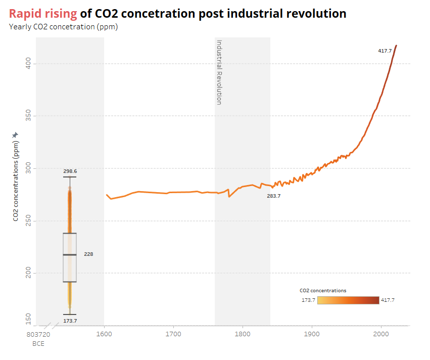
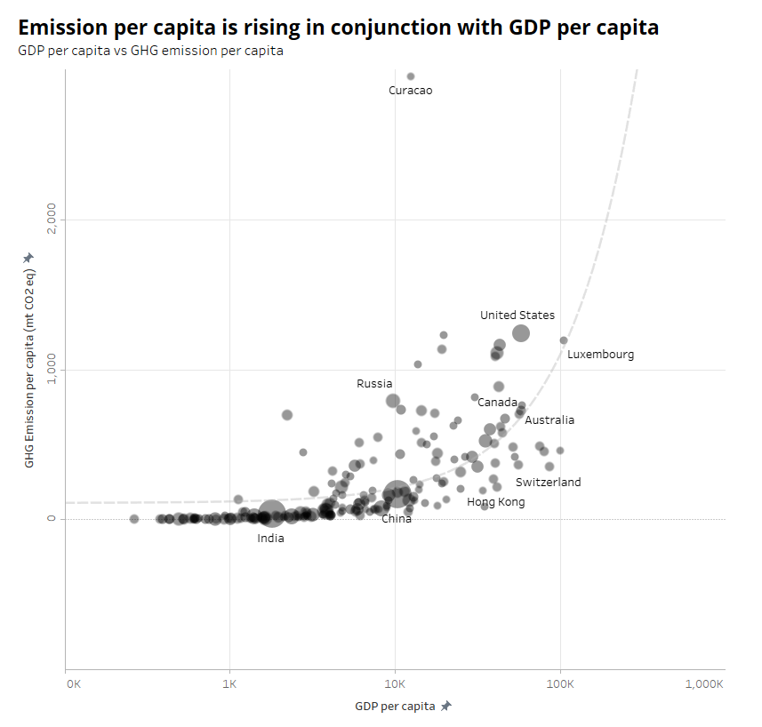
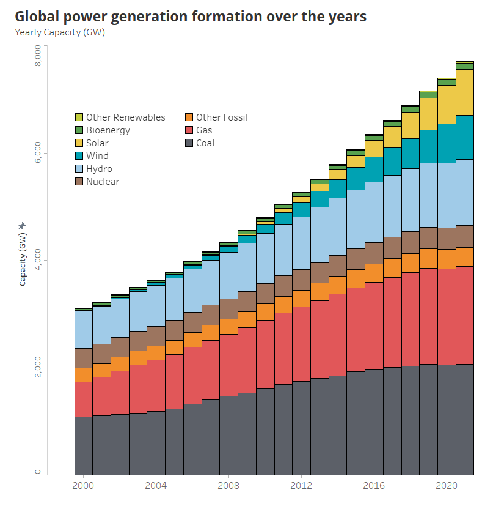
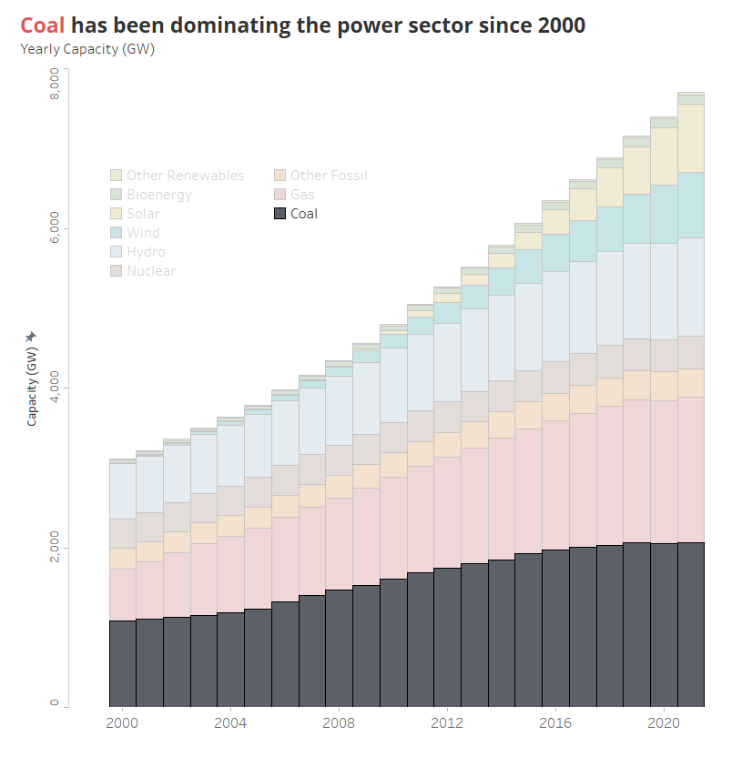
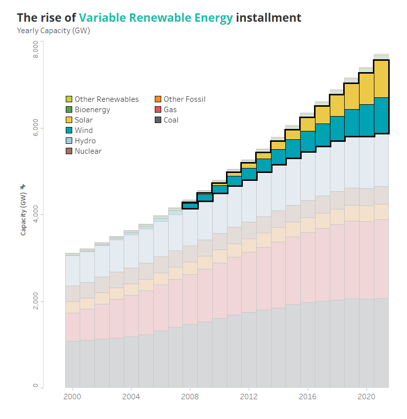
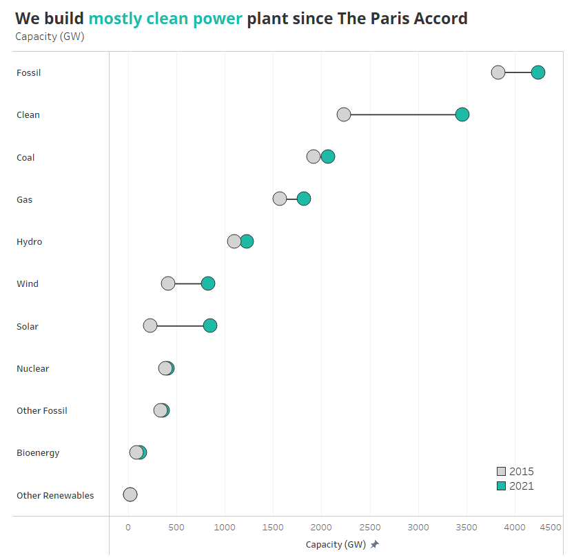
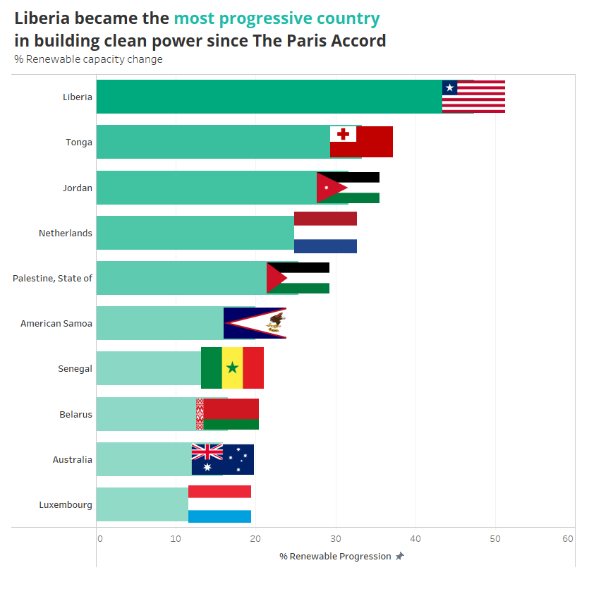
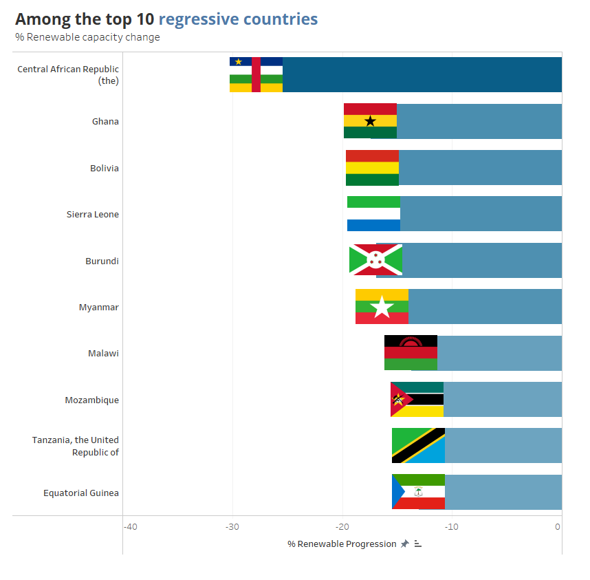
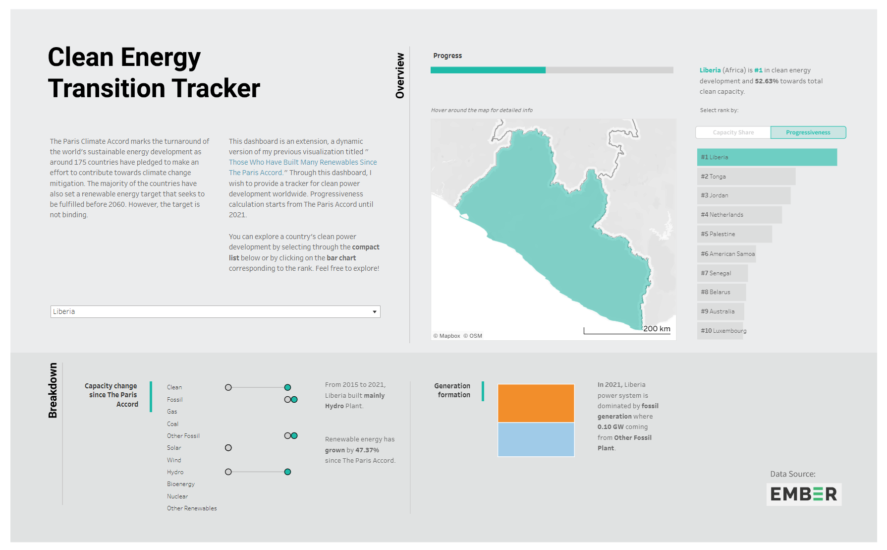

Tracking Country's Energy Transition Progression with Tableau Dashboard
Energy is an essential component of modern civilization. It fuels our daily activities. Even energy usage is strongly correlated to a country’s prosperity. However, we have used it unwisely as we have failed to take into account the externalities. Now, we must redefine our trajectory on how to use energy properly.
Through this article, I want to examine the current status of energy transition around the world. I want to find out which countries are quite progressive (and which countries are not) in terms of renewable energy development.
Ultimately, I design a dashboard in order to keep a closer look (collectively monitor) global renewable energy development.
My writing will be divided into two separate parts:
Feel free to skip the first part if you want to explore the dashboard.
Part I: An Ode To A Sustainable Earth
The world is progressing into a better shape. Most of us are also surrounded by well-being. However, our past approach to reaching prosperity contains blemishes as we burn a myriad of fossil fuels to drive the economy. Sadly, our atmospheric system is not made to self-cleanse. The air pollutant accumulates, and the consequences are coming.
Now we must redeem.
Overlooked sin and approaching consequences
We have been progressive in economic development for the last century, and energy has an essential role in accelerating our global economy.
Replacement of human labor by machinery fueled by fossil energy remark the beginning of the Industrial Revolution during the early nineteenth century. Later, it was used to generate electricity massively. It is an improvement in efficiency, however, also a catalyst of greenhouse gasses accumulation. The rapid burning is aligned with the rising greenhouse gasses concentration.


Above indications show that our well-being does not escape the emissions that accumulate and overshadow us.
Current condition
In 2021, the world’s electricity generation consisted of 36.8% coal, 22.3% gas, and 2.7% other fossil fuels. Global electricity consumption has risen by 12,550.35 TWh (83.86%) since 2000 and is predicted to keep growing as our population folds and our necessities intensify. Those stand without the interference of efficiency measures.

Since decades ago, coal has been the first choice in fulfilling power necessities. It is cheap, abundant, and transportable. It is suitable to fuel a country’s economic growth.
Nevertheless, this kind of energy source has a by-product. Coal is an energy source that is carbon intensive, where it produces 97.13 kilograms of CO2 per MMBtu (sub-bituminous). It is the highest compared to other fossil sources.

The shift in our energy landscape has just felt recently. Many countries (especially high-income countries) have begun to intensify their renewable energy development, seeking to replace fossil generation completely.
Technology advancement and policy design played an essential role in this transformation. Variable renewable energy technologies, previously an expensive and unreliable kind of generation, have become favorites and feasible to be reliably integrated into our power system. In fact, the barriers to the utilization of these energy sources are not technological, but rather economic and political.

Since The Paris Accord, we mainly build VRE. Solar and wind have grown by almost 1,000 and 500 GW, respectively.

Even though we are being progressive, we are still not on our trajectory to meet the developmental target.
Joint effort to mend past mistakes
The Paris Climate Accord marks the turnaround of the world’s sustainable energy development as around 175 countries have pledged to make an effort to contribute towards climate change mitigation. The majority of the countries have also set a renewable energy target that seeks to be fulfilled before 2060.
Liberia, Tonga, and Jordan were seen to be the most progressive countries in building clean generations. Liberia topped the list with a +47.37% renewable capacity share increase since 2015.

On the other hand, the Central African Republic suffer a setback in target fulfillment. The renewable capacity shares shrank by 27.78% since The Paris Accord.

Part II: Let Us Be The Overseer
As a conclusion of my article, I design a dashboard that contains parameters for clean energy transition observation across countries. I use data from Ember-Climate, an awesome think tank that focuses on the coal use reduction campaign.
All of the calculation shenanigans to produce the derivative parameters have also been uploaded on my Github.
The Interface

You can also check it at my Tableau profile. Feel free to explore!
Footnotes
-
All of the calculations behind this post can be found here.
-
I use Ember-Climate data for the dashboard.